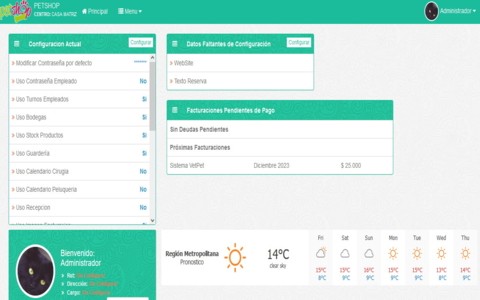

-

Inés Bengoa - Narración Infantil
En este sitio solo hice una mantención de plugins y correcciones visuales debido a algunas incompatibilidades entre plugins.
Actualmente fue rediseñada sobre otra arquitectura.
-

Itinerario muralístico
Creación del sitio en wordpress a partir de la versión antigua hecha en html y javascript.
-

Turismo Rural en Navarra
Creación del sitio en wordpress a partir de la versión antigua hecha en joomla.
Actualmente fue rediseñada sobre otra arquitectura manteniendo casi todas sus caracteristicas.
-

SimpliVet
Sitio web de presentación del software de gestión para centros veterinarios.


-

Lomas de Lambert
Sitio web de acceso a los interesados en comprar una parcela en esta zona, posee funcionamiento estandar de un sitio web de este tipo.
-

Terranía
Sitio web que muestra un listado de terrenos disponibles para la compra, separandolos por lineas de negocios, por region y comuna.
Obtiene los datos de las consultas a traves de un webservice y a traves de la direccion IP muestra 4 terrenos destacados cerca de la ubicacion entregada por dicha IP.

-

Plataforma Gestión Modular
Plataforma enfocada a gestionar las mediciones de telemetría a través de sus distintas interfaces para cada clientes de la empresa. Ofrece la administración de usuarios, de equipos de telemetría, gestión de mantenciones preventivas y de urgencia a los equipos de telemetría, informes agrupados al tipo de servicio ofrecido (medición temperaturas, GPS y niveles de riego en los campos, voltajes de equipo, etc.), entre otras características.

-

Plataforma SimpliVet Clientes
Plataforma de gestión para centros veterinarios, entre sus funciones se encuentran:
• Administración Centros
• Administración Trabajadores
• Administración productos y servicios
• Administración tutores y mascotas
• etc.
-

Plataforma Terrania
Plataforma enfocada en la gestión de venta de los terrenos para cada línea de negocios, gestionando de principio a fin cada negociación con las empresas interesadas de forma separada para cada terreno.